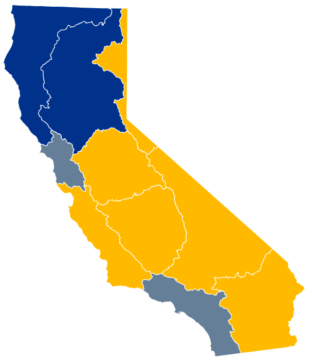

See statewide water use breakdown
CALIFORNIA WATER USE BREAKDOWN
Click on one of the innner sections to see a further breakdown.

In California, the majority of water is used for agriculture.
About 45% of the roughly 76,000 thousand acre-feet of water used on average between 2008 and 2018, the most recent 10 years available, was used for agriculture.
Click on an area on the map below to see a further breakdown of water uses
See statewide water use breakdown
Click on one of the innner sections to see a further breakdown.